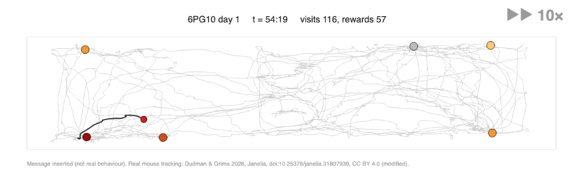

Mouse Messages
Type a message and a real foraging mouse writes it into its path.

What it is
A fun tool: type any message and it is inserted into the foraging trajectories of real mice from Laura Grima's open data. The mouse breaks off from foraging, writes the message, and carries on. Save it as a GIF to send.
The data
The tracking comes from Grima et al. (2026), Neuron (Dudman lab, Janelia): mice foraging for water across six spouts spread around an arena. The data are open (Figshare, CC BY 4.0).
How it works
The writing is simulated to move like the mouse: it steers along each letter with momentum, slows into tight turns, and pauses, using that mouse's own measured speeds and turning.
Links
- Mouse Messages (laptop or phone)
- Grima et al. (2026), Neuron
- The open dataset on Figshare (CC BY 4.0)
- FoMO: Foraging across many options (Dudman lab project page: paper, data and code)